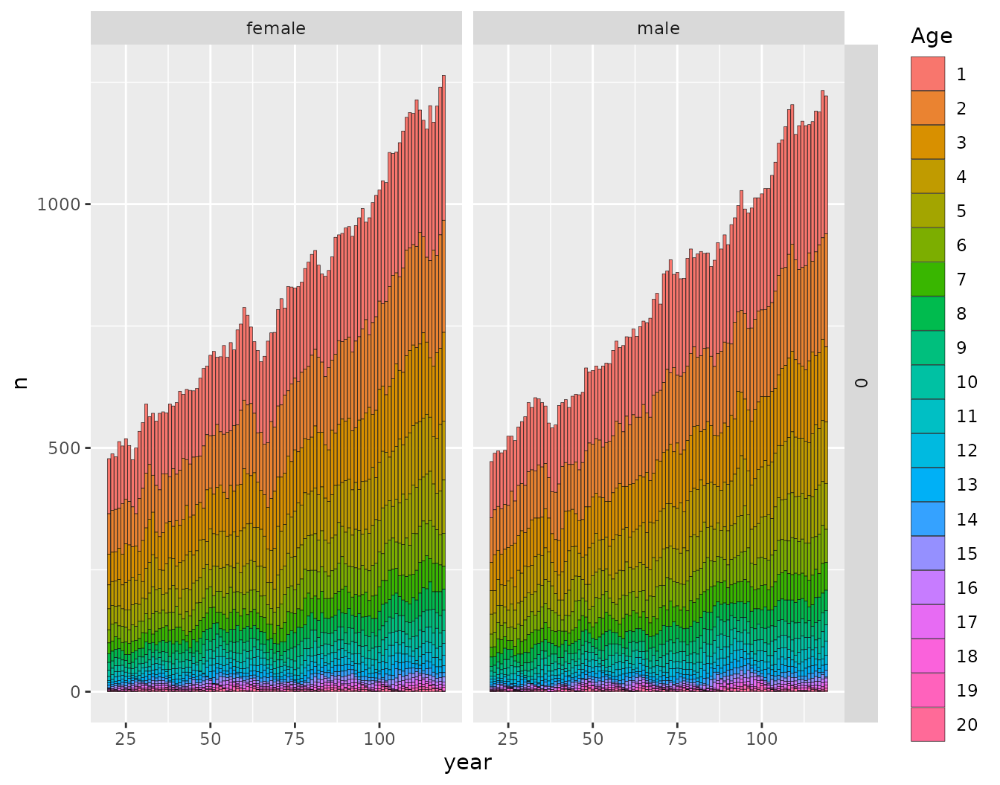
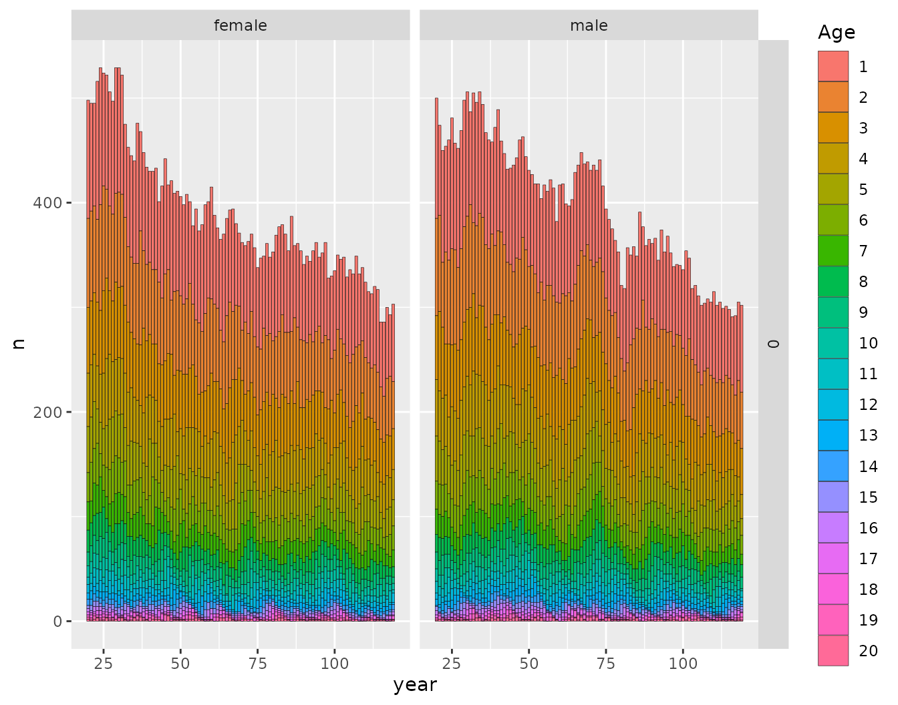

population-growth-with-spip.Rmd
library(CKMRpop)The default simulation engine for CKMRpop, spip, is not
well suited to scenarios with population growth or other size changes.
This is because the survival rates cannot be set to vary over time. So
the only way that population growth or decline occurs is by manipulating
the number of individuals entering the population each year.
This is done with the --cohort-size parameter.
Specifically, if you are doing a simulation for T years, you can do like
this:
--cohort-size var J1 J2...JTwhere J1 … JT are T integers giving the number of individuals entering the population each year. As the spip documentation says:
this makes the expected cohort size each year from
MaxAge to T+MaxAge-1 equal to J1 J2...JT respectively. Hence there
must be T such arguments J following the var option (where T is the
number of years that the simulation will run---the argument to the -T
or the --number-of-years option.)The CKMRpop function leslie_from_spip() provides a way
to figure out what the initial number of individuals should be, and what
the cohort sizes should be each year to simulate a growing or shrinking
population that has reached an equilibrium stable age distribution. (I
suspect that few populations of interest actually reach this type of
equilibrium—certainly not fish populations with high recruitment
variability—but for some purposes it will be important to be able to
simulate such a population.)
Note that this is only implemented correctly for scenarios in which male and female age-specific survival rates are the same.
Here we demonstrate how to simulate with population growth and decline in that equilibrium context.
Starting with a cohort size of 300 at just before the initial time
step, we show how to create a 1% rate of increase in the
species_1_life_history population for 100 years, and we also show a
scenario with a 0.05% rate of decline for 100 years. We can calculate
the parameters for both from a single call to
leslie_from_spip().
library(CKMRpop)
pars <- leslie_from_spip(
P = species_1_life_history,
C = 300,
growth_rates = c(0.01, -0.005),
T = 100
)That object pars has the parameters we need to simulate
the population under those scenarios. For the scenarios with specified
growth rates, the results we need are in:
and
respectively.
We just have to set up the iniital pop sizes and cohort sizes.
GrowthPars <- species_1_life_history
# always put the number of years in first:
GrowthPars$`number-of-years` <- 100
GrowthPars$`initial-females` <- floor(pars$growth_rate_results$`0.01`$stable_age_distro_fem)
GrowthPars$`initial-males` <- floor(pars$growth_rate_results$`0.01`$stable_age_distro_male)
GrowthPars$`cohort-size` <- pars$growth_rate_results$`0.01`$cohort_size_param_string
# we also add some sampling parameters here
samp_frac <- 0.03
samp_start_year <- 50
samp_stop_year <- 75
GrowthPars$`discard-all` <- 0
GrowthPars$`gtyp-ppn-fem-post` <- paste(
samp_start_year, "-", samp_stop_year, " ",
samp_frac, " ", samp_frac, " ", samp_frac, " ",
paste(rep(0, GrowthPars$`max-age` - 3), collapse = " "),
sep = ""
)
GrowthPars$`gtyp-ppn-male-post` <- GrowthPars$`gtyp-ppn-fem-post`Then we can run the population:
set.seed(5) # set a seed for reproducibility of results
spip_dir <- run_spip(pars = GrowthPars) # run spip
slurped <- slurp_spip(spip_dir, 2) # read the spip output into RNow, let’s plot the population sizes to see it is doing what we expect it to be doing:
ggplot_census_by_year_age_sex(slurped$census_postkill)
OK, that looks pretty much like it ought to.
We just have to set up the iniital pop sizes and cohort sizes.
DeclinePars <- species_1_life_history
# always put the number of years in first:
DeclinePars$`number-of-years` <- 100
DeclinePars$`initial-females` <- floor(pars$growth_rate_results$`-0.005`$stable_age_distro_fem)
DeclinePars$`initial-males` <- floor(pars$growth_rate_results$`-0.005`$stable_age_distro_male)
DeclinePars$`cohort-size` <- pars$growth_rate_results$`-0.005`$cohort_size_param_string
# we also add some sampling parameters here
samp_frac <- 0.03
samp_start_year <- 50
samp_stop_year <- 75
DeclinePars$`discard-all` <- 0
DeclinePars$`gtyp-ppn-fem-post` <- paste(
samp_start_year, "-", samp_stop_year, " ",
samp_frac, " ", samp_frac, " ", samp_frac, " ",
paste(rep(0, DeclinePars$`max-age` - 3), collapse = " "),
sep = ""
)
DeclinePars$`gtyp-ppn-male-post` <- DeclinePars$`gtyp-ppn-fem-post`Then we can run the population:
set.seed(5) # set a seed for reproducibility of results
spip_dir <- run_spip(pars = DeclinePars) # run spip
slurped <- slurp_spip(spip_dir, 2) # read the spip output into RNow, let’s plot the population sizes to see it is doing what we expect it to be doing:
ggplot_census_by_year_age_sex(slurped$census_postkill)